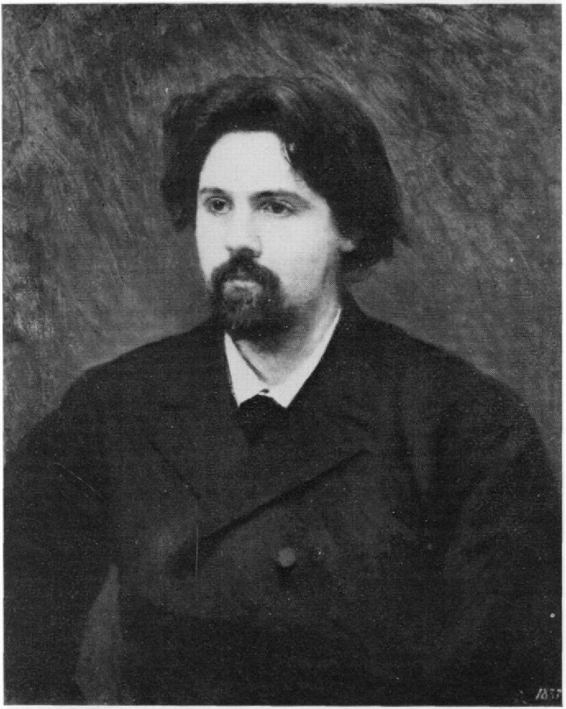
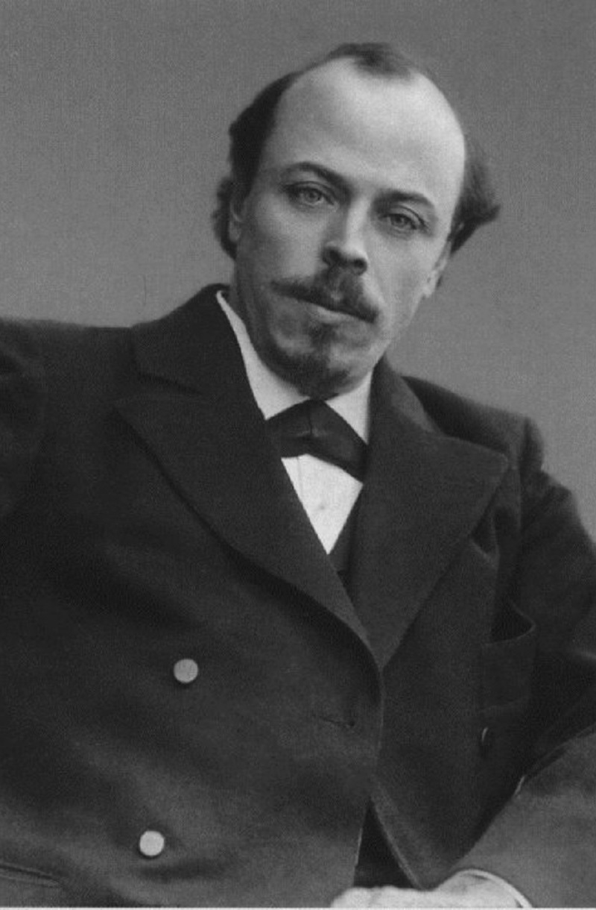

|
В.И. Суриков |
(1848 — 1916) |
 |
«Утро стрелецкой казни», «Боярыня Морозова», «Переход Суворова через Альпы» |
|
И.Е. Репин |
(1844 - 1930) |
|
«Иван Грозный и сын его Иван», «Правительница Софья Алексеевна в монастыре» |
|
Н.Н. Ге |
(1831 - 1894) |
|
«Царь Петр допрашивает царевича Алексея в Петергофе» |
|
В.В. Верещагин |
(1842 — 1904) |
|
Серия картин по истории Отечественной войны 1812 года, «На Шипке все спокойно», «Шипка-Шейновою Скобелев под Шипкой» |
|
В.М. Васнецов |
(1848 — 1926) |
|
«Царь Иван Васильевич Грозный» |
|
М.В. Нестеров |
(1862 - 1942) |
 |
«Видение отроку Варфоломею» |
|
М.П. Греков |
(1882 — 1934) |
|
«Трубачи Первой конной» |
|
К.Ф. Юон |
(1875 - 1958) |
|
«Парад на Красной площади в Москве 7 ноября 1941 года» |